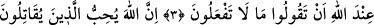

YAPMAYACAĞINIZ ŞEYLERİ
NİÇİN SÖYLÜYORSUNUZ?
Bismillâhirrahmânirrahîm
1. Göklerde ve yerdekilerin hepsi Allah’ı tesbih eder. O üstündür, hikmet
sâhibidir.
2. Ey îman edenler! Yapmayacağınız şeyleri niçin söylüyorsunuz?
3. Yapmayacağınız şeyleri söylemeniz, Allah katında büyük bir nefretle karşılanır.
4. Allah, kendi yolunda kenetlenmiş bir yapı gibi saf bağlayarak savaşanları sever.
“Göklerde ve yerdekilerin hepsi Allah’ı tesbih eder.” Göklerdeki bütün faal
durumdaki yüce varlıklar ve yerde tecellîleri kabul eden varlıklar, âfâkî ve enfüsî,
hiçbir varlık arasında herhangi bir ayırım olmaksızın Allah Teâlâ’yı, O’na lâyık
olmayan şeylerden tenzih ve tesbih ederler. Allah Teâlâ’nın da buyurduğu gibi: “Onu
övgü ile tesbih etmeyen hiçbir şey yoktur.” (İsrâ’, 17/44)
“O, üstündür, hikmet sâhibidir.” Öyle galiptir ki yalnız O’nun dilediği olur. O,
yaptığını hikmetinin gereği olarak yapar. O halde mutlak mânâda üstün ve hikmet sâhibi
yalnız O’dur. İşte bu sebeple O’nu tesbih etmek gerekir.
Keşfü’l-esrar adlı eserde şöyle denilmiştir: Tesbihinin düzgün ve hâlis olmasını
isteyen kimse kalbini nefsinin etkilerinden arındırsın. Cennetteki yaşayışının düzgün ve
güzel olmasını isteyen de dinini heves ve arzularından temizlesin.
2. Ey îman edenler! Yapmayacağınız şeyleri niçin söylüyorsunuz?
Rivâyet edildiğine göre bazı müslümanlar, Allah Teâlâ katında en sevimli olan
ibâdetin hangisi olduğunu bilsek onu yerine getirmek için mallarımızı ve canlarımızı o
uğurda fedâ ederdik, dediler. Cihad ile ilgili âyet inince de ondan hoşlanmadılar. Bunun